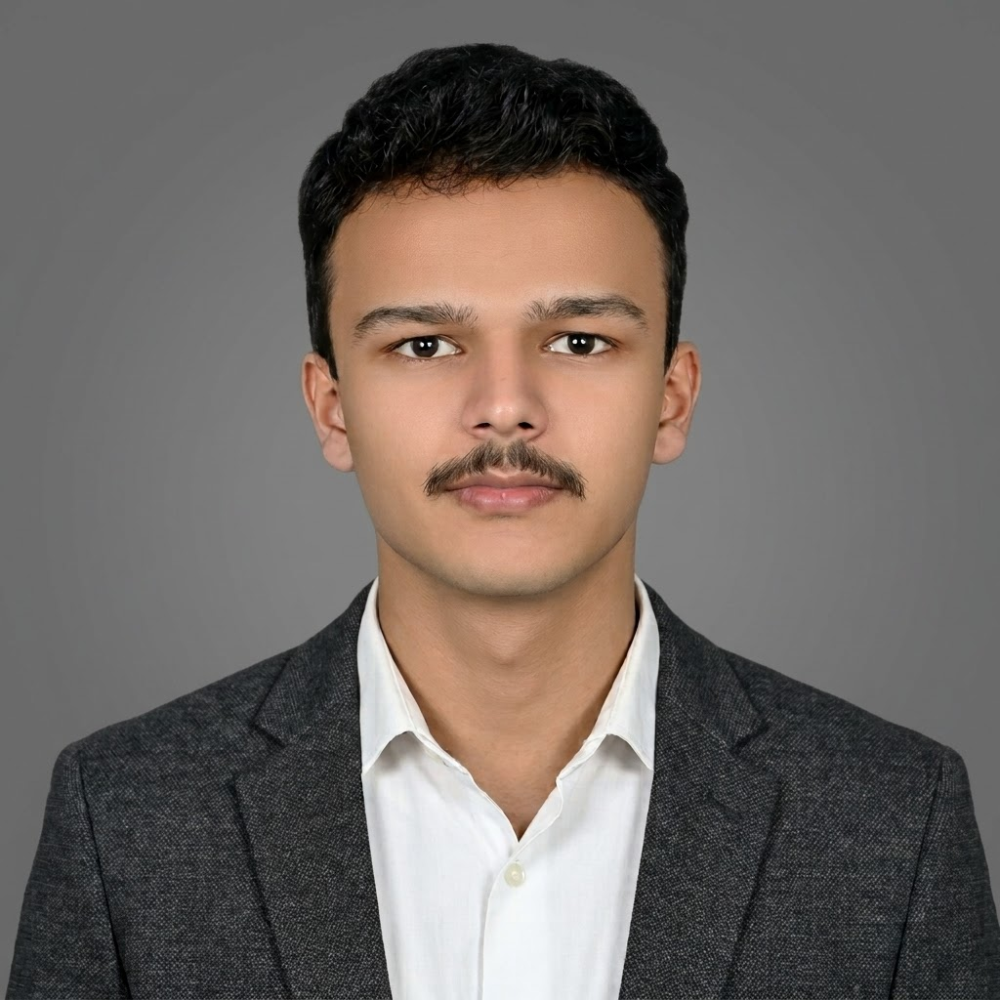

Current / First semester01
National University of Sciences & Technology
Islamabad, Pakistan
UniversityIn progress
Designing with intentSecuring with curiosity
UI/UX DESIGNER
ASPIRING CYBERSECURITY & AI SECURITY ENTHUSIAST
Exploring the meeting point of artificial intelligence, cybersecurity, and human-centered design—so the digital world can work better and feel safer.

01 / Profile
A little context — no noise
I’m Muhammad Aneeq Khan, a UI/UX designer and first-semester student at the National University of Sciences & Technology (NUST).
I’m currently exploring how artificial intelligence and the cyber world can work together. I’m drawn to problem-solving and to helping people with thoughtful, straightforward solutions—without adding unnecessary complexity. I’m here to keep learning, build useful things, and make online spaces safer for more people.
02 / Current focus
Exploration in progress ●
Good digital experiences don’t have to choose between being useful and being safe. I’m learning how these ideas connect—and where I can contribute.
I’m interested in designing thoughtful, easy-to-understand digital experiences that respect people’s time, needs, and choices.
These are active interests and learning goals—not a claim of professional security credentials.
03 / Education
The foundations — still growing
Every stage has taught me to stay disciplined, ask better questions, and keep reaching for the next challenge.
Islamabad, Pakistan
Intermediate · A+ grade
Sarfaraz Rafiqui Road (GBHS)
04 / Connect
Different perspectives welcome ↗
I’m excited to connect with fellow university students and curious people around the world. If you care about AI security, cybersecurity, or thoughtful digital experiences, let’s learn from each other and build toward something better.